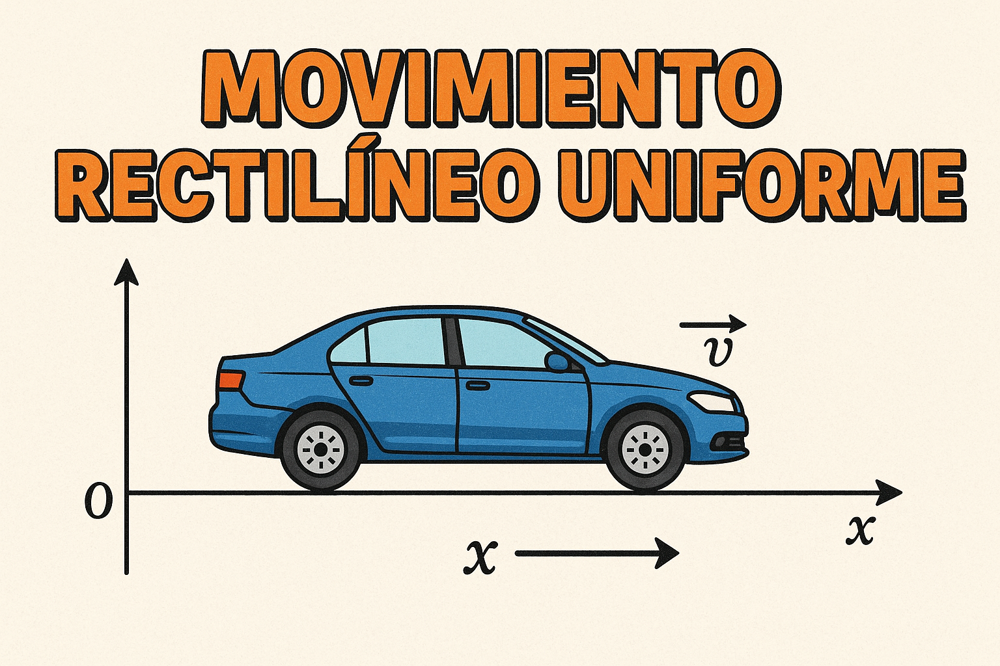

Saltar la navegación
Movimiento Rectilíneo y Uniforme
Movimiento Rectilíneo Uniforme
1. ¿Cómo sabemos que un cuerpo se está moviendo?
1.2 Posición
Activiades de posición
1.3 Trayectoria, distancia recorrida y desplazamiento
2. Velocidad
2.1 Cambio de unidades
Actividades Conversión Velocidad
2.2 Actividades
3. Movimiento rectilíneo uniforme (MRU)
Actvidades
4 Gráficas posición-tiempo
4.1.1 Actividad: Información gráfica posición-tiempo
4.1.2 Actividad: Construye una gráfica a partir de una tabla
4.1.3 Actividad: Construye una gráfica a partir de la ecuación de posición
5. Posición relativa de dos vehículos
Actividad: Posición relativa de dos vehículos
6. Gráficas posición-tiempo por tramos
7. SdA
Ficha Didáctica
Siguiente
»
Movimiento Rectilíneo Uniforme

Siguiente
»
Creado con eXeLearning
(Ventana nueva)